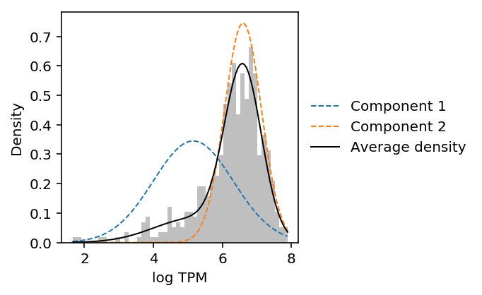

Common pitfalls in estimating the number of modes of gene expression
Table of Contents
Joint distribution of expression across genes
Reproduce Fig 1C of Kharchenko et al 2014. They analyzed scRNA-Seq of mouse embryonic fibroblast cells generated by Islam et al 2011.
{kind=link}
curl -s -o GSE29087_L139_expression_tab.txt.gz "https://www.ncbi.nlm.nih.gov/geo/download/?acc=GSE29087&format=file&file=GSE29087_L139_expression_tab.txt.gz"
islam_counts <- read.delim(gzfile('/scratch/midway2/aksarkar/modes/GSE29087_L139_expression_tab.txt.gz'), skip=6, header=F) x <- log10(islam_counts[,92] + 1) y <- log10(islam_counts[,93] + 1) keep <- x != 0 | y != 0 png('temp.png', width=4, height=4, res=300, units="in") smoothScatter(x[keep],y[keep] ) dev.off()

Parse the data.
with gzip.open('/scratch/midway2/aksarkar/modes/GSE29087_L139_expression_tab.txt.gz', 'rt') as f: next(f) # first three lines are description next(f) next(f) barcodes = next(f).split() samples = next(f).split() next(f) # skip header features = [] counts = [] for line in f: row = line.split('\t') features.append(row[:6]) counts.append([int(x) if x else np.nan for x in row[6:]]) counts = np.ma.masked_invalid(np.array(counts).T)
Plot the joint distribution of \(\log_2\) expression values across a pair of cells.
def plot_joint_dist_two_cells(x, y): x = np.log(x + 1) / np.log(2) y = np.log(y + 1) / np.log(2) keep = (x + y) > 0 plt.clf() plt.gcf().set_size_inches(3, 3) plt.hexbin(x[keep], y[keep], gridsize=25, bins='log', cmap=colorcet.cm['bgyw_r']) H, xx, yy = np.histogram2d(x[keep], y[keep], bins=30) gridx, gridy = np.meshgrid(xx[1:] + (xx[1] - xx[0]) / 2, yy[1:] + (yy[1] - yy[0]) / 2) low_pass = np.logical_and(H > 0, H < 3) plt.scatter(gridx[low_pass].ravel(), gridy[low_pass].ravel(), c='k', s=H[low_pass], alpha=0.5) plt.xlim([-0.5, 16]) plt.ylim([-0.5, 16]) plt.xticks(np.arange(0, 16, 5)) plt.yticks(np.arange(0, 16, 5)) plt.xlabel('$\log_2(r + 1)$ of cell 1') plt.ylabel('$\log_2(r + 1)$ of cell 2')
plot_joint_dist_two_cells(counts[91], counts[92])
x = np.log(counts[91] + 1) / np.log(2) y = np.log(counts[92] + 1) / np.log(2) plt.clf() plt.gcf().set_size_inches(3, 3) plt.scatter(x, y, c='k', s=1, alpha=0.1) plt.axis('equal') plt.xlabel('$\log_2(r + 1)$ of cell 1') _ = plt.ylabel('$\log_2(r + 1)$ of cell 2')

Now, simulate count data, assuming 25,000 molecules per cell and a range of parameters matching real data:
{kind=link}
\[ r_{ij} \sim \mathrm{Poisson}(R_i \lambda_{ij}) \]
\[ \lambda_{ij} \sim \mathrm{Gamma}(\mu, \phi) \]
def simulate_counts(num_cells, num_genes, size, nb=False, zi=False, seed=None): if seed is not None: np.random.seed(seed) mu = np.exp(np.random.uniform(-15, -4, size=(1, num_genes))) if nb: phi = np.exp(np.random.uniform(-4, 1, size=(1, num_genes))) u = np.random.gamma(phi, phi, size=(num_cells, num_genes)) else: u = 1 x = np.random.poisson(lam=size * mu * u, size=(num_cells, num_genes)) return x
First, simulate Poisson data.
x, y = simulate_counts(num_cells=2, num_genes=10000, size=2.5e4, seed=0) plt.clf() plt.gcf().set_size_inches(3, 3) plt.scatter(np.log(x + 1) / np.log(2), np.log(y + 1) / np.log(2), c='k', s=1) plt.xlabel('$\log_2(r + 1)$ of cell 1') _ = plt.ylabel('$\log_2(r + 1)$ of cell 2')

Now, simulate negative binomial data.
x, y = simulate_counts(num_cells=2, num_genes=10000, size=2.5e4, nb=True, seed=0) plt.clf() plt.gcf().set_size_inches(3, 3) plt.scatter(np.log(x + 1) / np.log(2), np.log(y + 1) / np.log(2), c='k', s=1) plt.xlabel('$\log_2(r + 1)$ of cell 1') _ = plt.ylabel('$\log_2(r + 1)$ of cell 2')
The results suggest that the observed pattern of zeros in the joint distribution of genes across cells can arise simply from Poisson sampling. The observed outliers can be explained by overdispersion as well.
Mode on zero
Reproduce Fig. 1E of Kharchenko et al 2014. We observed a similar relationship between \(\mathrm{logit}(\pi)\) and \(\ln\mu\) in iPSCs.
log_mu = pd.read_table('/project2/mstephens/aksarkar/projects/singlecell-qtl/data/density-estimation/design1/zi2-log-mu.txt.gz', index_col=0, sep=' ') log_phi = pd.read_table('/project2/mstephens/aksarkar/projects/singlecell-qtl/data/density-estimation/design1/zi2-log-phi.txt.gz', index_col=0, sep=' ') logodds = pd.read_table('/project2/mstephens/aksarkar/projects/singlecell-qtl/data/density-estimation/design1/zi2-logodds.txt.gz', index_col=0, sep=' ')
plt.clf() plt.gcf().set_size_inches(3, 3) x, y = log_mu['NA18507'].align(logodds['NA18507'], join='inner') plt.scatter(x, y, c='k', s=1, alpha=0.25) plt.xlabel('$\ln(\mu)$') _ = plt.ylabel('$\mathrm{logit}(\pi)$')
Now, simulate Poisson data and compute the empirical fraction of zeros.
x = simulate_counts(num_cells=1000, num_genes=10000, size=2.5e4, seed=2) plt.clf() plt.gcf().set_size_inches(3, 3) plt.scatter(np.log(x.mean(axis=0) / 2.5e4), (x == 0).mean(axis=0), c='k', s=1, alpha=0.25) plt.xlabel('$\ln(\hat\mu)$') _ = plt.ylabel('Empirical fraction of zeros')

Do the same for negative binomial data.
x = simulate_counts(num_cells=1000, num_genes=10000, size=2.5e4, nb=True, seed=2) plt.clf() plt.gcf().set_size_inches(3, 3) plt.scatter(np.log(x.mean(axis=0) / 2.5e4), (x == 0).mean(axis=0), c='k', s=1, alpha=0.25) plt.xlabel('$\ln(\hat\mu)$') _ = plt.ylabel('Empirical fraction of zeros')
The results suggest that even non-zero inflated data will have a sigmoidal relationship between the fraction of zeros and mean expression.
However, the results also suggest that zero-inflation is needed to explain the particular shape of the dependence observed in real data.
Distribution of log CPM across cells
Reproduce Fig 1C from Bacher and Kendziorski 2016.
{kind=link}
Data set sc2 is scRNA-Seq of hESCs generated in Leng et al 2015.
curl -s -o GSE64016_H1andFUCCI_normalized_EC.csv.gz "https://www.ncbi.nlm.nih.gov/geo/download/?acc=GSE64016&format=file&file=GSE64016_H1andFUCCI_normalized_EC.csv.gz"
leng_tpm = pd.read_table('/scratch/midway2/aksarkar/modes/GSE64016_H1andFUCCI_normalized_EC.csv.gz', sep=',', index_col=0)
To estimate the number of modes, Bacher and Kendziorski fit a Gaussian mixture model to log-transformed expression, selecting the number of components which optimizes BIC.
def naive_est_num_modes(x): x = np.log(x.mask(x == 0).dropna()).values.reshape(-1, 1) if x.shape[0] > 1: res = mclust.Mclust(x, verbose=False) return np.array(res.rx2('parameters').rx2('mean')).shape[0] else: return np.nan
num_modes = (leng_tpm .loc[(leng_tpm > 0).mean(axis=1) > 0.75] .sample(n=1000, random_state=0) .apply(naive_est_num_modes, axis=1))
plt.clf() plt.gcf().set_size_inches(3, 3) plt.hist(num_modes, bins=np.arange(num_modes.dropna().max()), color='black') plt.xlabel('Number of modes') _ = plt.ylabel('Number of genes')

Look at some examples.
def plot_data_gmm(x): x = np.log(x.mask(x == 0).dropna()).values.reshape(-1, 1) res = mclust.Mclust(x, verbose=False) plt.clf() plt.gcf().set_size_inches(3, 3) grid = np.linspace(x.min(), x.max(), 100) plt.hist(x, color='.75', bins=50, density=True) means = np.array(res.rx2('parameters').rx2('mean')).reshape(-1, 1) variances = np.array(res.rx2('parameters').rx2('variance').rx2('sigmasq')).reshape(-1, 1) F = st.norm(loc=means, scale=np.sqrt(variances)).pdf(grid) for i, px in enumerate(F): plt.plot(grid, px, lw=1, label='Component {}'.format(i + 1), ls='--') weights = np.array(res.rx2('parameters').rx2('pro')) plt.plot(grid, weights.dot(st.norm(loc=means, scale=np.sqrt(variances)).pdf(grid)), label='Average density', lw=1, c='k') plt.legend(frameon=False, loc='center left', bbox_to_anchor=(1, .5)) plt.xlabel('log TPM') _ = plt.ylabel('Density')
CDC6 was reported as a gene showing cyclical gene expression through the cell cycle in the original study.
plot_data_gmm(leng_tpm.loc['CDC6'])

Look at the gene with the most estimated modes.
num_modes.idxmax()
'SEPN1'
plot_data_gmm(leng_tpm.loc['SEPN1'])

The results suggest that Gaussian mixture modeling of log-transformed data does not give the right answer. Further, they suggest that GMM overfits the data (despite optimizing BIC).
Pseudocount
When computing log-transformed expression values, we need to introduce a pseudocount \(\epsilon\) to deal with observations of zero.
Standard choices include \(\epsilon = 1\) and \(\epsilon = .5 / \bar{R}\), where \(\bar{R} = \frac{1}{n} \sum_i R_i\) (McCarthy et al 2012).
Clearly, the pseudocount will introduce a mode at zero, even when the data is Poisson distributed.
x = simulate_counts(num_cells=1000, num_genes=10000, size=1e5, seed=3) R = x.sum(axis=1) # Match edgeR eps = .5 / R.mean() y = (np.log(x + eps) - np.log(R.reshape(-1, 1) + 2 * eps) + 6 * np.log(10)) / np.log(2) # Get the simulated gene with most zeros idx = np.argmax((x == 0).mean(axis=0))
plt.clf() fig, ax = plt.subplots(1, 2, sharey=True) fig.set_size_inches(5, 3) ax[0].hist(x[:,2], bins=np.arange(15), color='k') ax[0].plot(.5 + np.arange(15), 1000 * st.poisson(mu=x[:,2].mean()).pmf(np.arange(15)), lw=1, c='r') ax[0].set_xlabel('Molecule count') ax[0].set_ylabel('Number of cells') ax[1].hist(y[:,2], bins=30, color='k') ax[1].set_xlabel('$\log_2(\mathrm{CPM})$') fig.tight_layout()